Flex is a image-oriented wordpress theme that was developed to be an affordable solution for people looking to start a Wordpress based portfolio and blog. This theme comes fully equipped with up to date features seen across many of todays top industry standard community based sites. Features include image galleries, lightboxes, sidebar widgets, and much more.
Please take the time to read through the instructions listed here, as many support related questions can be answered simply by re-reading these instructions.
Time Note: I recommend that you allocate between 2 and 3 hours to install this theme properly. Some users may finish in 30 minutes, some may take an entire day... but just keep in mind that this is a bit more advanced than your everyday generic WP Theme, and that there is a small learning curve involved in figuring out how to use it (as there is with any premium theme). The large number of "custom features" that you'll find in this theme require users to take a few minutes to really understand how they work - so I recommend that you take your time with this and don't rush it.
Code Note: Coding knowledge isn't mandatory to set up this theme, but it also won't hurt if you want to make any modifications beyond what's covered in this manual. As with any Wordpress theme, making changes takes time and coding... certainly not any more coding that you might require for any other Premium theme that's accomplishing the same effects, but if you're totally new to HTML or XML, I highly recommend you take the time to read the documentation before you jump in. Keep in mind you can also peek at the HTML structural notes inside the HTML Bonus folder in the "Getting Started" document.
Updates Note: I fully intend to continue working on this theme for at least a few more versions until I'm satisfied that I've provided as many cool features as I deem necessary.
1. Pre Installation and Setup Steps
Put on your Wordpress hats... we're about to start the installation. First things first. You need a working verion of Wordpress. I built this using Wordpress 2.9.2.
I haven't tested for versions earlier than this, and I highly recommend that you simply update your WP installation if you're on one of the older frameworks. The future will invetiably bring new versions of WP as well... and I can't offer any warranties that this theme will work for them, but I'll be doing my best to keep this theme as up to date as possible.
I'll be making lots of references to the Worpdress admin panel in this documentation. If you're totally new to Wordpress, take a few minutes to familiarize yourself with how the admin panel is laid out so you won't be lost when I instruct you to open up "Appearance > Widgets" or something like that. :)
- Installing Needed Plugins –
Step 1 ) You will need to locate and install the 1 plugin that this theme requires to run properly. If you're using Wordpress 2.7 or a more recent version, you can install theme plugins automatically by simply searching for them using the new "Add New" plugin tool.
Alternatively, you can manually download these files from their respective websites. Then upload the plugins and read the installation instructions that come with each. Usually installing a plugin is as simply as uploading it to the plugins directory of your wordpress install.
Keep in mind that you'll need to "Activate" the plugin after you have installed it. You can do this from the "Plugins" admin page.
Setting Up Needed Plugin –
Contact Form 7 : This plugin allows you to include a contact form on any page or post inside of Wordpress, and it's quite handy. Technically, this plugin isn't required for this theme to run and there are a bunch of other great contact form plugins out there, but this is my form of choice. Once activated, you can access this plugin's admin panel through the sidebar:
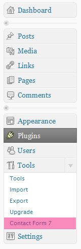
I won't go into details, but once you've setup your first form inside of the admin panel, you can add it to any page using a "shortcode":
[contact-form 1 "Contact form 1"]That's it! Super simple contact forms. Refer to the author's documentation for additional notes on how to use it:
2. Installing and Setting Up The Theme
Theme Installation –
Setting Up The Theme – This next section will take you through the process of uploading, activating, and setting the theme up. I'll go into details below, but here's a checklist that you can use just to get a feel for the process:
1) Upload the Theme2) Activate the Theme3) Fill out the Flex Settings4) Setup the sidebar widgets5) Import demo content (optional, but recommended for most people)
Step 1) Upload the Theme : Located within the files you downloaded inside the 'www' folder there is a folder named 'flex'. This is the folder and contents you will need to upload to your webserver. If you already have wordpress installed and running on your domain, then you will need to place this folder ('flex') in the folder found in your web directories path which looks somewhat like this '/wp-content/themes/'.
Users who don't want to deal with uploading the theme manually into the web server, you can also just the "Appearance > Add New Themes > Upload" option. Just upload the zipped up theme folder that's been provided in the "www-zip" folder.
Step 2) Activate the Theme : Once the folder 'flex' has been uploaded inside of the folder '/wp-content/themes/', you can then login to your wordpress admin and go to themes to click on and activate the Flex theme. Depending on a few things you might get some error type messages, this just means that you'll need to set some things up first before you are off and running. Ignore them and select "Activate".
At this point your website isn't going to look right... that's totally okay - you still need to setup a few things.
Note: If you run into problems during installation/activation, please check out this screencast
Step 3) Fill out the Flex Settings : In the left sidebar of your Wordpress admin panel, you should see a new tab at the bottom called "Flex Settings", you will need to go through this entire page and fill it out with your content.
NOTE: You probably won't be able to enter all of this until you enter some content into your blog (posts, pages, etc.). You can do this on your own, or just import the demo content in Step 05. I just want you to open this up and get familiar at this point. We'll be back shortly.
This is going to be the "go-to" page for all Flex related stuff. It controls layouts, optional features, and lots of other theme related things. Take a few minutes to get friendly with it.
I've also included a big screenshot of what my version looks like for the demo. There's instructions inside the panel, just follow them and you should be just fine :) It also won't hurt if you want to copy some of the settings that I've selected (after you enter the demo content). *Note that this screenshot may not represent exactly what is in your version as I'll likely be updating this admin panel from time to time.
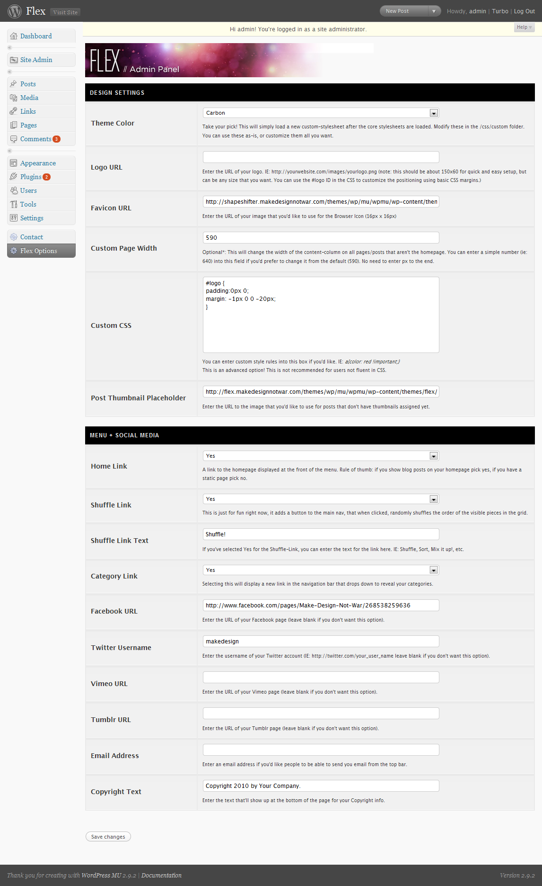
Step 4) Setup the sidebar widgets : This theme uses 5 different "sidebars" inside of the "Appearance > Widgets" page: Main Sidebar, Footer 1, Footer 2, Footer 3, Footer 4.
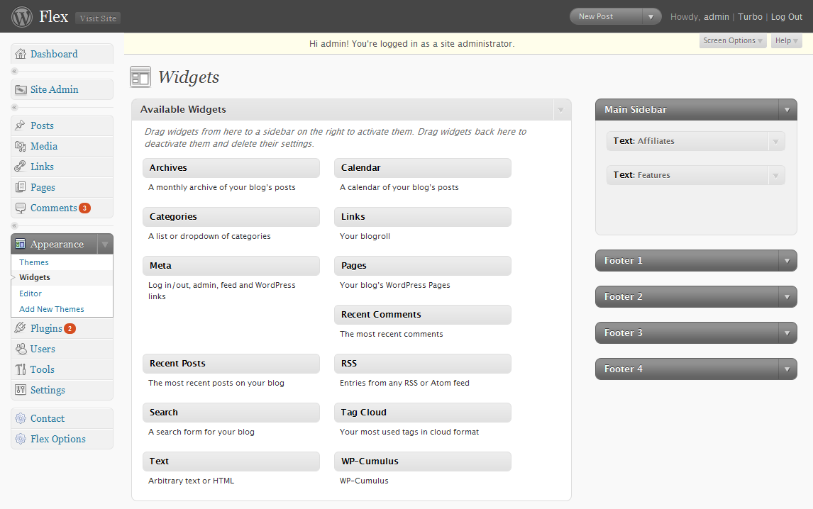
And here is an image of what my demo sidebar looks like with all the widgets open. You will notice that in some spots, I'm using actual coding inside of a "Text Widget". You can do this too if you know a little HTML - or you can just use the standard Wordpress widgets as they were meant to be used. I've done this just to illustrate how you can get creative with widgets.
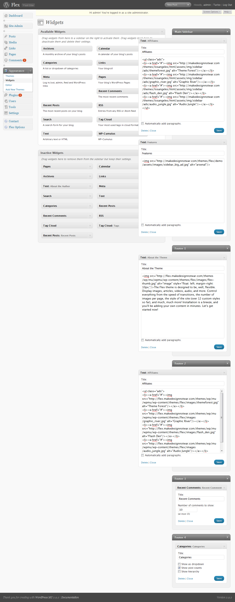
Step 5) Importing the "demo" content : This is an optional step, but I've found that it's often helpful to provide the exact content that's shown in the Demo just so you can see how things are setup there. You can obviously delete any of the unwanted content later, but unless you are super comfortable with Wordpress (and some of the new features like Post-Thumbnails), it's worth it just to see how things work in this theme.
Full demo Content (full_demo.xml) : This file will basically import all the content that you've seen in the demo. Once you get this imported, you can edit/delete/add content as you please.
You'll find this file inside the "demo Content" folder. Importing this files is easy. Simply navigate to "TOOLS > IMPORT > WORDPRESS, and then select the .XML (also referred to as an .WXR file) file of your choice. When prompted to "Download Attachements", I recommend that you do so. Again, you can delete all of the demo-content later on.
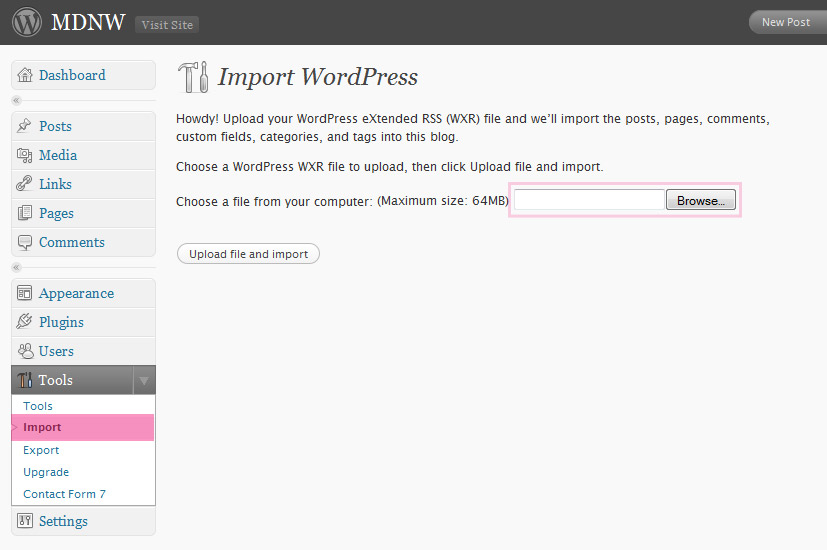
Once the import is done (it might take a little bit of time), you can begin poking your nose around the theme content. You can also now return to the Flex Options screen and begin making your own changes to that screen.
3. Using this Theme
Almost there! So you've installed the theme now, activated all the plugins, setup the custom theme options, and you should have some content in there now. This final section will walk you through how to use the theme the best way possible. Note: This is probably the trickiest part of using this theme, so take a moment and read this section through once or twice before you dig in.
Wordpress Post Thumbnails This is an awesome new feature for Wordpress version 2.9 that allows us to quickly create an image-thumbnail to each post and then present it on the homepage. You will find the Post Thumbnail tool inside the right sidebar of the Post Editor. Using it is pretty easy - the following notes correspond to the next 5 screenshots:
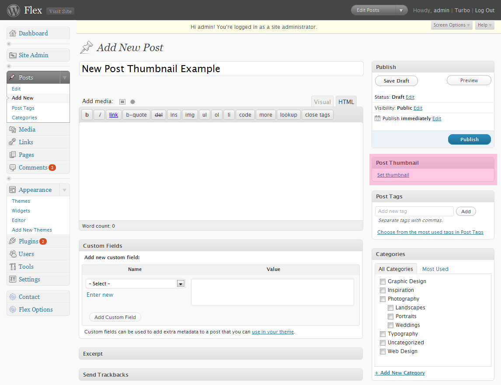
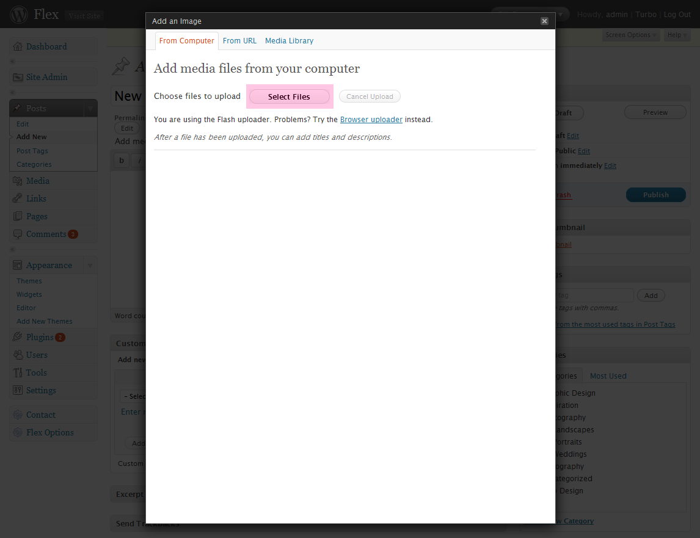
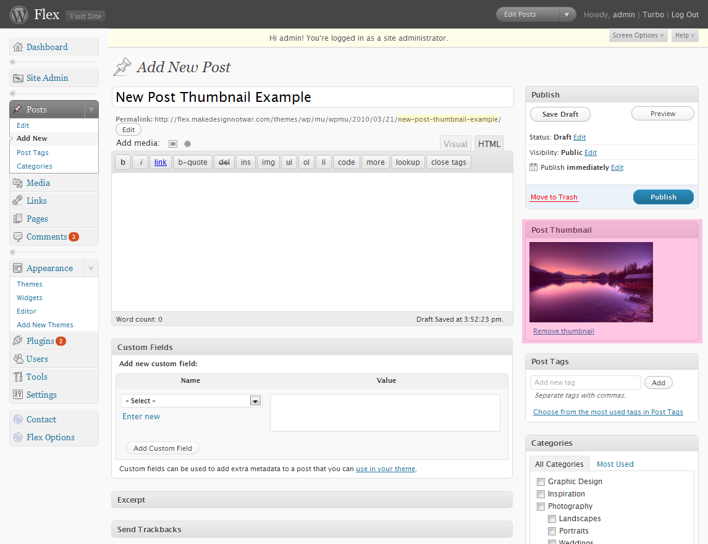
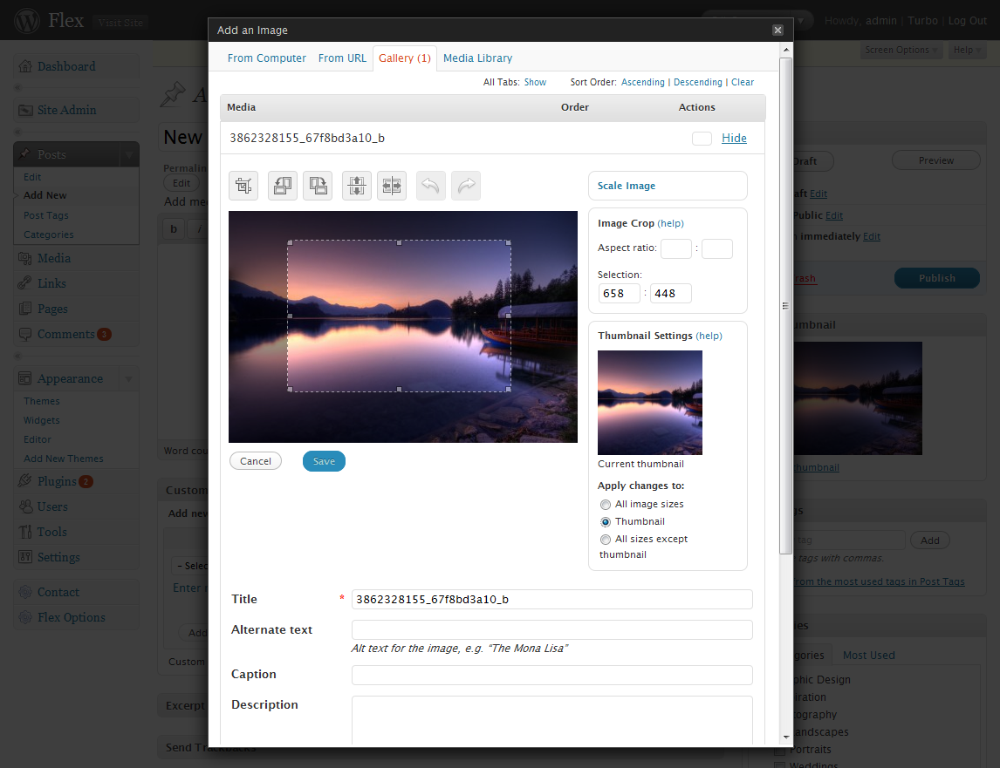
Note - if you don't select a thumbnail (and if you post any plain-text articles, you might not even want a thumbnail), the theme will default to using your "placeholder" thumbnail as specified in the admin panel.Custom Fields Custom fields are the way that we'll be telling some post-links to open up inside a lightbox. We're also using one custom field to remove the sidebar in some of your posts. Before we dig into actually using these custom fields, I'd like to briefly summarize what they are and where they are used in the theme. The following screenshots outline the 3 main custom-fields used in Flex:lightbox_link : Adding this custom field (the value will be an image or media URL) will tell the browser to open the link inside a lightbox. lightbox_gallery_link : Similar to the "lightbox_link" field, this tells the browser to open up inside a lightbox. The only difference: if there more than one image inside the posts "gallery", it will be displayed in the lightbox as Next/Previous links. Again, the value will be an image or media URL and it will represent the first image that you want opened in the gallery.remove_sidebar : Optional: In case you don't want a sidebar in any of your posts or pages, you can use this custom field. The value should just be "yes".
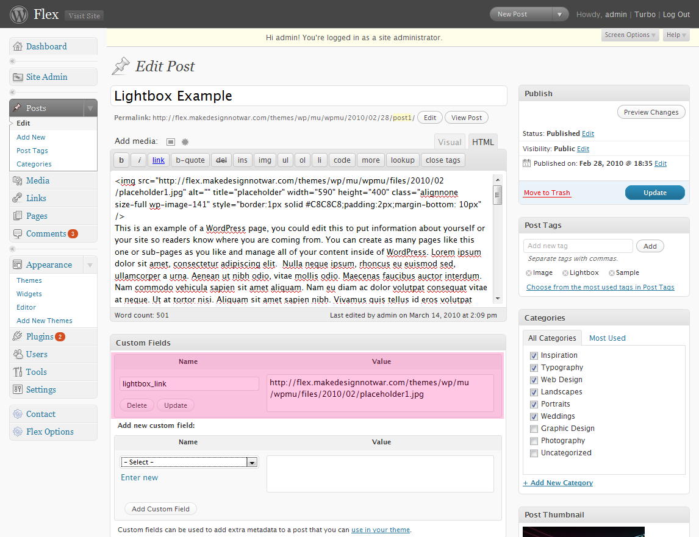
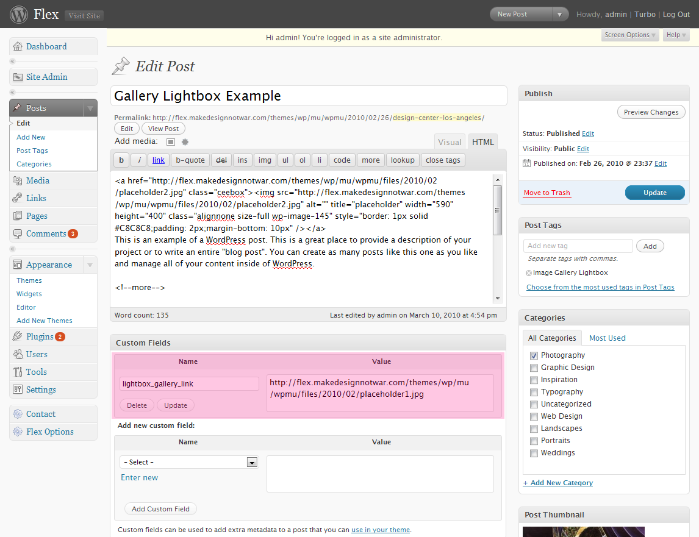
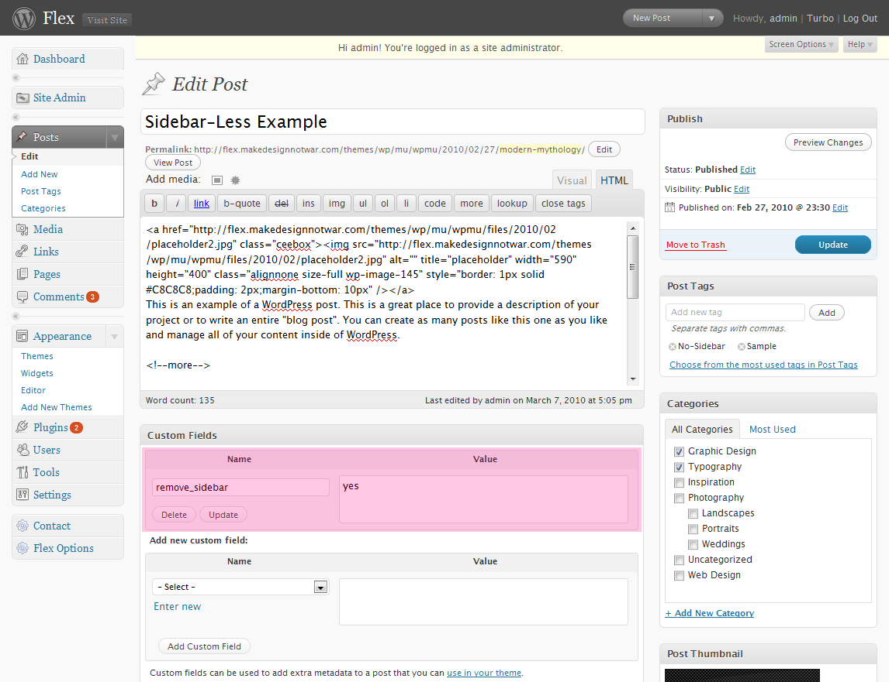
To add your own custom fields, just select them from the "Add a new custom field" menu inside the post editor.
4. Conclusion
This completes the formal documenation on how to set this theme up. From here, the possibilities are pretty much unlimited for what you can accomplish with this theme. While I can't help out with individual customization requests, I have taken some time to jot out some ideas, tips, and advice on customizing this theme beyond the default settings.
Adding your own content: At this point you can also begin changing/deleting the "demo content" from what's in there to what you want. Your workflow for most posts should look like this:
Before making any customizations to the template files: Keep a backup of the original, working files before you try any major changes.
Getting your Logo Position just right: The demo has a specific logo placement, but you can very easily change this by adding some basic CSS specifications inside the Custom CSS field in the admin panel. For instance, if you wanted to move the logo down 10px and to the right 10px, you would do the following:
#logo {
padding:0px 0; /* This just resets the padding to zero. */
margin-top: 10px;
margin-left: 10px;
}
Basic CSS/Skin Customization: The first, easiest way is to edit the custom stylesheets found in the "library/css/custom" folder. These stylesheets allow users familiar with CSS to quickly change the link colors and background images for the theme and alter the colors, so take a few minutes to investigate a few of these to see how they work. You can also load in other custom styles in here and it should override the core.css file. Keep in mind that making changes to CUFON often requires you to use the "custom/cufon.js" file. Users that are confident can actually dig into the core.css and other files to make more dramatic changes.
Basic CSS Training Firebug Plugin : this is a browser plugin that will help you find what lines in the CSS you need to edit.
Additional Customization: you can find more information about the third party plugins to really dig into customizing this theme. Please reference the documentation for the third party scripts (as well as Wordpress) that are used in this theme, as follows:
1. CeeBox (The Lightbox) Wordpress Codex Using CUFON jQuery VGrid Demos
5. Advanced Modifications:
Here are a few modifications that you can make if you're looking to take this theme even further. Disclaimer: Keep in mind, this is all stuff that's completely out of the scope of the theme as you've bought it, so if you run into issues here, I can't guarantee that I can help out. As always, keep a backup of the original, working files before you try any major changes. These are simply some ideas for ways that you can take this theme and make it your own using a little extra time and hard work. With that said, here's a few ideas for modifications:
Changing the size of the module thumbnail : ADVANCED! You've been warned! To change the size of the thumbnails, you'll need to make the following changes:if ( function_exists( 'add_theme_support' ) ) { // Added in 2.9
add_theme_support( 'post-thumbnails' );
set_post_thumbnail_size( 200, 130, true ); // Normal post thumbnails
} #grid-content .post_float {
background-color:#FFFFFF;
height:190px;
margin:0 8px 8px 0;
overflow:hidden;
padding:14px;
width:208px;
}
Taking it even further: You can also theoretically select a specific category to have bigger thumbnail images by creating a new CSS class that has bigger dimmensions, but as this is even more advanced, I'll refer you to a great resource that will get you started on this modification: Advanced Post Thumbanail Usage . Note that each module DIV is automatically assigned a "category-XXXXX" class, which you can use to override the default CSS rules. You'll then need to sort out how to change the PHP to suit your goals. Keep in mind, this is all stuff that's completely out of the scope of the theme as you've bought it, so if you run into issues here, I can't guarantee that I can assist with it.
Changing the VGRID Settings : ADVANCED! You've been warned! To change the various settings for the VGRID, just open up the /assets/js/flex.js file and find the VGRID section:
/* JQUERY GRID ACTIVATION */
$("#grid-content").vgrid({
easeing: "easeOutQuint",
time: 500,
delay: 0
});
$(window).load(function () {
$("#grid-content").vgrid({
easeing: "easeOutQuint",
time: 400,
delay: 5,
fadeIn: {
time: 500,
delay: 5
}
});
var hsort_flg = false;
$("#hsort").click(function(e){
hsort_flg = !hsort_flg;
$("#grid-content").vgsort(function(a, b){
var _a = $(a).find('div').text();
var _b = $(b).find('div').text();
var _c = hsort_flg ? 1 : -1 ;
return (_a > _b) ? _c * -1 : _c ;
}, "easeInOutExpo", 300, 0);
return false;
});
$("#rsort").click(function(e){
$("#grid-content").vgsort(function(a, b){
return Math.random() > 0.5 ? 1 : -1 ;
}, "easeInOutExpo", 300, 50);
return false;
});
Keep in mind that I've built this theme by reverse-engineering the VGRID plugin, which was created by a non-English speaking coder, and there is no official documentation for this plugin. To state it simply, this is totally new territory - it's really fun to play with, but you'll need to really look at the jQuery VGrid Demos for the plugin to see how they work.
Here's a few quick ways to get notifications about new products and updates to this product: